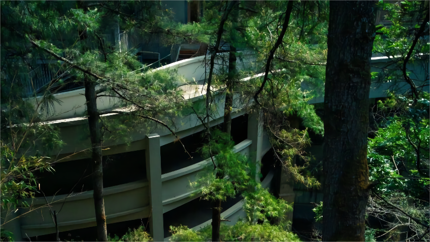
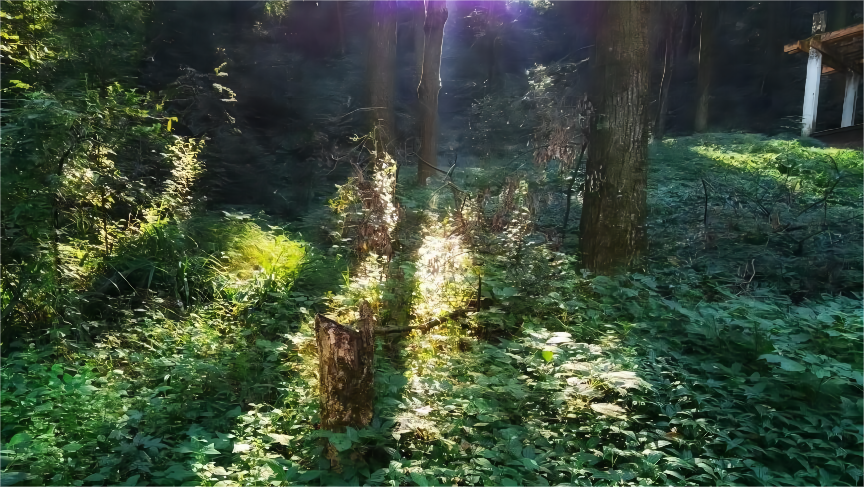

云南大学
西山位于昆明市西侧，毗邻滇池，距离市区约15公里。这里森林茂密，环境清新雅致，又可以俯瞰浩瀚滇池，一直是昆明人和游客们爬山观景的好去处。
西山位于昆明市西侧，毗邻滇池，距离市区约15公里。这里森林茂密，环境清新雅致，又可以俯瞰浩瀚滇池，一直是昆明人和游客们爬山观景的好去处。山上的龙门石窟更是古老珍贵，是热爱人文的游客的必游之地。
西山景区内名胜景致众多，华亭寺、太华寺、聂耳墓、三清阁等，无不更具特色。从景区入口开始，上山的路都是柏油路，一路前行，不时可以看到滇池，也能遭遇到华亭寺、太华寺等古刹，加之山间空气清新，徜徉其间颇为惬意。
龙门指的是西山三清阁到山顶达天阁之间的一段石雕工程。一路的千百个台阶和沿途随处可见的浮雕、石刻和山洞等都是由清代匠人采用原始的工具一点点雕琢而成，整个工程历史72年才得以完工，堪称壮观。达天阁是龙门的制高点，建有专门的观景台，站在台上，可俯瞰苍茫的五百里滇池。
太华寺和华亭寺,分别修建于元代和唐代，钟鼓楼、天王殿、大雄宝殿等主要建筑都随山势上升，显得高大雄伟。两寺之间以“太华古道”相连接，石阶的山路宽敞平坦，步行于期间，感觉宁静悠远。
云南大学地球科学学院@2021~2022